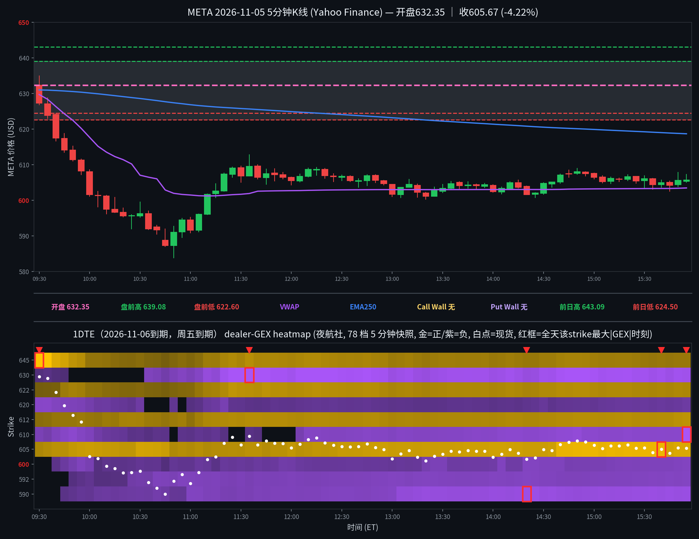

META 日内报告
2026年11月5日 · 周四 · 日内报告
早盘分析
（Junk-man 早盘简报未抓取到，留空待补）
（待补充 Junk-man 当日 #junkman-analysis 原文）
GEX 盘前作战卡
来源：第三方 GEX 引擎盘前输出（用户提供）｜GEX 时间 2026-11-05T14:12:09.193Z → 2026-11-05T14:12:24.886Z｜到期口径 26-11-05、26-11-06（单日最近到期，不跨期聚合）
GEX 盘前作战卡｜2026-11-05 周四 结构：🟢 正 GEX·钉住/均值回归 条件偏向：📈 偏多 波动：🔥 高波动｜1DTE IV 46.7%｜预期振幅 ±2.20% 关键位（YHS 09:30 首帧＋开盘汇报补，非引擎原数；Flip 为帧内累加变号近似值）： META｜💵 632.35｜Flip 下方·待近端确认 🔴 上墙 640｜🟢 下墙 622.5｜🔵 Flip ≈645｜🧲 645 🎯 触发：↑ 645 → 650｜↓ 622.5 → 612.5（帧内节点推导）
盘前卡片 · 第三方引擎输出；关键位速览行注明引擎原文或 YHS 补口径，仅供参考
5 分钟 K 线 × 1DTE heatmap
1DTE（2026-11-06到期，周五到期），夜航社 78 档 5 分钟快照；白点为每档现货位置

heatmap解读（1DTE（2026-11-06到期），夜航社 78 档 5 分钟快照）
GEX 地形图（1DTE（2026-11-06到期），夜航社 78 档 5 分钟快照）：金色=正 gamma 区（做市商对冲减速带/墙），紫色=负 gamma 区（加速带）。白点为每档现货位置。另注：美东已转 EST，heatmap 窗口按 14:30Z–21:05Z 取全（09:30–15:55 ET）。
- 金色带（15:55 收盘帧）：605(+5.5M)/612.5(+3.8M)/622.5(+2.9M)；现价 605.67 贴在最大正节点 605 上，下方正节点 602.5(+1.7M)/587.5(+2.1M)
- 紫色带（15:55 帧）：610(-9.0M)/630(-7.3M)/590(-6.6M)/592.5(-4.3M)/600(-4.2M)；610 负簇距收盘价仅约 4 点，压在收盘价正上方
- 全天最大节点：630(-9.3M@11:35)、645(+9.0M@09:30)、610(-9.0M@15:55)、605(+6.9M@15:40)、590(-6.9M@14:20)
- 结构特点：总 gamma 开盘 +6.5M，30 分钟内翻负（10:00 -4.5M），此后全天为负并向收盘加深（13:00 -12.1M → 15:55 -17.9M）；价格在翻负过程中从 632 一带单边跌至 584，盘前低 622.60 开盘 10 分钟内即破、前日低 624.50 在 09:35 当根即破、首帧算法 Put 墙 605 在 10:00 当根即破，墙/king 未挡价、只随价格下移——与用户当日“大波动日 gamma 不挡价、只跟随”的观察一致（该观察未立为生产规则，仅作当日记录）；收盘在 VWAP(603.47)上方、EMA250(618.70)下方
全天最大节点 TOP5
一、630（上方负区，全天最大 |GEX|，V 型收回途中形成的天花板）：全天变化——09:30 -1.0M → 09:50–10:30 未进前 20 行（<0.6M，价格暴跌段该 strike 几乎无量）→ 10:35 -4.0M → 11:00 -3.7M → 11:25 -8.7M → 11:35 -9.3M 峰值 → 12:00 -7.5M → 13:00 -6.7M → 15:00 -8.1M → 15:30 -7.7M → 15:55 -7.3M；影响时段——10:35 之后、价格自 583.80 低点 V 型收回途中（11:10 收 601.71 → 11:25 收 609.09）负值一路加深；影响方式——收回途中的上方压制：负值在价格向其靠近的过程中形成，价格午后最高仅约 609、全天再未挑战 630，该节点未被兑现为加速或反压，只记录为收回行情的头顶负区。
二、645（上方正区，首帧最大正节点，开盘即被抛在身后的墙）：全天变化——09:30 +9.0M（首帧最大正节点，首帧算法 Call 墙）→ 10:00 +1.9M → 11:00 +1.2M → 12:00 +2.8M → 13:00 +2.1M → 15:00 +2.4M → 15:30 +2.0M → 15:55 +2.0M；影响时段——仅首根 09:30 前后价格在其下方约 16 点（现货约 629）；影响方式——未被触及的墙：价格开盘后即单边下行、与该节点越离越远，+9.0M 在 30 分钟内衰减至 +1.9M，全天未再对价格产生任何约束；大波动日开盘墙被抛离的典型形态。
三、610（上方负区，收盘帧最大负节点，压在收盘价正上方）：全天变化——09:30 -3.6M → 10:00 -3.9M → 11:00 -1.4M → 12:00 未进前 20 行 → 13:00 -4.2M → 14:00 -4.7M → 15:00 -5.0M → 15:30 -4.9M → 15:55 -9.0M 峰值（收盘帧）；影响时段——15:55 收盘前后，价格 605.67、位于其下方约 4 点；影响方式——收盘压顶的近处负簇：负值在午后横磨中缓慢加深、收盘帧突深至 -9.0M，价格收在其下、未进入该区；明日开盘若直接上探 610 一带，该负簇为加速通道，反之则为头顶压制。
四、605（正区，全日锚点：由墙转磁铁）：全天变化——09:30 +3.0M（首帧算法 Put 墙）→ 10:00 +4.6M → 11:00 +3.2M → 12:00 +4.1M → 13:00 +4.4M → 14:00 +4.9M → 15:00 +6.9M → 15:30 +6.8M → 15:40 +6.9M 峰值 → 15:55 +5.5M；影响时段——全天：上午价格约 10:00 当根跌破它（未起阻挡）、午后价格贴其上下磨（收盘 605.67 恰在其上）；影响方式——墙未挡、磁铁成立：早盘跌破时 +3.0M 的正节点未减速价格；V 型收回后价格回到 605 一带、午后 601–609 窄磨，节点同步走强至 +6.9M，收盘价贴在该节点上——是当日唯一全天有效的结构锚。
五、590（下方负区，晨间低点附近形成的负带，全天未再被测试）：全天变化——09:30 未进前 20 行 → 10:00 -1.8M → 11:00 -4.2M → 12:00 -3.9M → 13:00 -4.4M → 14:00 -6.4M → 14:20 -6.9M 峰值 → 15:00 -6.2M → 15:30 -6.5M → 15:55 -6.6M；影响时段——10:50 日低 583.80 前后形成，午后价格在其上方约 15 点；影响方式——低点下方的加速带留痕：价格 10:50 跌至 583.80 时已在其下方、随后 V 型收回，该负带此后再未被价格触及；午后它稳定在 -6M 至 -7M，作为下方加速区挂在收盘价之下约 15 点。
亮度口径：p99 截断做上限；红框 = 全天该 strike 最大 |GEX| 时刻；TOP5 排名以全天最大 |GEX| 为准（build_meta_day.py 输出一致）。
资金流（1DTE到期2026-11-06，20笔；premium≥$20万｜size≥50｜DTE≤1｜side=at_ask/at_bid；mid单列、绝不计入主动买卖）
| 时间 | Strike | C/P | DTE | Fill | Bid/Ask | Side | Size | Prem | Vol | OI |
|---|---|---|---|---|---|---|---|---|---|---|
| 09:50:51 | 612.5 | PUT | 1 | $7.55 | 7.55 / 7.60 | BID | 266 | $0.201M | 898 | 515 |
| 09:51:06 | 612.5 | PUT | 1 | $8.00 | 7.85 / 8.00 | ASK | 281 | $0.225M | 1221 | 515 |
| 10:00:45 | 607.5 | PUT | 1 | $8.25 | 8.25 / 8.30 | BID | 349 | $0.288M | 2305 | 1085 |
| 10:07:37 | 600.0 | PUT | 1 | $8.45 | 8.45 / 8.75 | BID | 388 | $0.328M | 5708 | 3812 |
| 10:17:19 | 600.0 | PUT | 1 | $8.90 | 8.75 / 8.90 | ASK | 388 | $0.345M | 7875 | 3812 |
| 10:23:10 | 595.0 | PUT | 1 | $8.60 | 8.60 / 8.75 | BID | 300 | $0.258M | 3669 | 1232 |
| 10:24:00 | 595.0 | PUT | 1 | $8.90 | 8.90 / 9.30 | BID | 493 | $0.439M | 4220 | 1232 |
| 10:31:26 | 595.0 | PUT | 1 | $7.60 | 7.55 / 7.60 | ASK | 491 | $0.373M | 6339 | 1232 |
| 10:36:19 | 595.0 | PUT | 1 | $9.75 | 9.25 / 9.75 | ASK | 411 | $0.401M | 6646 | 1232 |
| 10:37:26 | 595.0 | PUT | 1 | $10.80 | 10.80 / 10.90 | BID | 373 | $0.403M | 7308 | 1232 |
| 10:43:29 | 592.5 | CALL | 1 | $10.20 | 10.15 / 10.20 | ASK | 223 | $0.227M | 596 | 23 |
| 10:56:27 | 585.0 | PUT | 1 | $7.20 | 7.20 / 7.25 | BID | 500 | $0.360M | 3113 | 759 |
| 11:01:20 | 595.0 | CALL | 1 | $9.19 | 9.20 / 9.25 | BID | 251 | $0.231M | 2989 | 71 |
| 11:02:02 | 590.0 | PUT | 1 | $9.30 | 8.85 / 9.30 | ASK | 255 | $0.237M | 4918 | 4115 |
| 11:09:20 | 612.5 | PUT | 1 | $20.55 | 20.55 / 20.60 | BID | 193 | $0.397M | 1858 | 515 |
| 12:01:43 | 610.0 | PUT | 1 | $12.90 | 12.55 / 12.90 | ASK | 500 | $0.645M | 4808 | 3961 |
| 13:05:59 | 600.0 | PUT | 1 | $9.50 | 9.15 / 9.50 | ASK | 243 | $0.231M | 11411 | 3812 |
| 14:41:26 | 605.0 | PUT | 1 | $8.80 | 8.80 / 8.85 | BID | 280 | $0.246M | 5970 | 1881 |
| 15:46:26 | 605.0 | PUT | 1 | $9.50 | 9.05 / 9.50 | ASK | 230 | $0.218M | 6745 | 1881 |
| 15:56:41 | 610.0 | CALL | 1 | $7.25 | 7.20 / 7.25 | ASK | 493 | $0.357M | 7068 | 261 |
偏多 11 笔 $3,504k（call ask 2 笔 $584k＋put bid 9 笔 $2,920k）vs 偏空 9 笔 $2,906k（put ask 8 笔 $2,675k＋call bid 1 笔 $231k），净偏多约 $598k；mid 单 0 笔。注意：净偏多与当日 -3.84% 的 tape 相反——偏多几乎全来自 put bid（下跌途中卖 put 收权利金/平仓），并非看多押注，方向读数弱；最大单笔为偏空的 12:01 P610 at_ask $645k（500 张，现货 604.50，ITM put ask）；595 put 全天出现 5 次（bid/ask 双向），买卖双向均有，不宜读成单边。30 分钟桶：10:00–10:30 $1,658k、10:30–11:00 $1,764k、11:00–11:30 $865k、12:00–12:30 $645k 四个 ≥$600k 簇，集中在暴跌与 V 型收回时段（10:00–11:00 两桶合计 $3,422k）；其中 10:00–10:30 桶内偏多 $1,313k vs 偏空 $345k（put bid 主导），10:30–11:00 桶内偏多 $990k vs 偏空 $774k。
分析总结
价格行为 × 1DTE GEX 结构复盘
① 开盘 632.35（官方；较昨收 629.89 高开 +0.39%），全天 583.80–634.99，收 605.67（-3.84% vs 昨收；收开差 -26.68）。盘前高 639.08 / 低 622.60，09:25 盘前价 631.20。
② 白点轨迹：首根 09:30 开 632.35、摸 634.99 后收 627.33 → 单边级联下跌（09:35 收 623.83 → 09:45 收 614.16 → 09:55 收 608.20 → 10:00 收 601.58 → 10:30 收 596.24）→ 10:45–10:50 见全天低 583.80（10:50 收 591.02）→ V 型收回（11:10 收 601.71 → 11:25 收 609.09，低点反弹约 25 点）→ 午后 601–609 窄磨 → 终根 15:55 收 605.67（收在前日低 624.50、EMA250 618.70 之下，VWAP 603.47 之上）。
③ 结构：总 gamma 开盘 +6.5M，30 分钟内翻负（10:00 -4.5M），全天为负并向收盘加深（13:00 -12.1M → 15:55 -17.9M）；价格在翻负过程中从 632 单边跌至 584——盘前低 622.60 开盘 10 分钟内即破、前日低 624.50 在 09:35 当根即破、首帧算法 Put 墙 605 在 10:00 当根即破，墙/king 未挡价、只随价格下移（用户当日原话：大波动日 gamma 没什么用；此观察未立为生产规则，仅作当日记录）。午后价格贴着 605 正节点（收盘 +5.5M）磨，605 由墙转磁铁；收盘帧 610 负簇 -9.0M 压在收盘价上方约 4 点。
④ Junk-man 简报已核实缺席（见 junkman 字段）：按 2026-11-05 用户指令不再查 Discord，本地无用户当日粘贴/上传的简报文件，墙位记 null；收盘算法关键位见明日预测（算法值，非简报墙）。
⑤ 资金流：本日口径内 20 笔，净偏多约 $598k 但与 tape 相反（见资金流 verdict）——下跌途中 put bid 占主导，方向读数弱；最大单笔为偏空的 12:01 P610 ask $645k；10:00–11:00 暴跌时段两桶合计 $3,422k，占全天口径内 premium 的约一半。
K线=Yahoo Finance 5分钟；heatmap=夜航社 dealer-GEX 5分钟快照；heatmap亮度=平方根连续渐变（p99裁剪）。
收盘后的静态快照；页面不在打开时更新行情。